1926—The New-Way Course in Fashionable Clothes-Making
Lesson 39—Theory and Practice of Dress Design
The Requirements of Dress Design
Dress means as much to a person as a good speaking voice, or a pleasing manner. And as one eminent authority has said, "One's dress attracts or repels at all times." Its elegance depends on two fundamental principles: the search for greater simplicity, and the search for detail and personality.
If more dressmakers knew and practiced the principles of design, we would not see so many unbecoming and inharmonious dresses. Even the woman who does not expect to make clothes for others should be able to design for her own form and coloring, and learn exactly what clothes are most becoming to her. If one achieves suitability, comfort, becomingness and good taste, one will be at all times well dressed.
In dress, just as in the design of all other things, there are two kinds of design, structural and decorative. By structural design is meant that which deals with the mass, line, size and shape of the object. Decorative design is that part which deals with color and ornament.
In order that you may be successful in the making of beautiful clothes by the proper application of structural and decorative design, there are certain essential points for you to learn. We will take these up one at a time and be sure that you thoroughly understand them before passing on to their practical application.
Harmony
Harmony is the agreement of all parts which go to make up the entire object. That is to say, there must be created the impression of unity. If any part appears to be out of place, improper as to size, shape, color, etc., we fail to produce an harmonious whole.
Harmony as applied to dress requires that the structural design, as well as the decorative design, must be in accordance with the definition just given.
A dress being something to adorn the human figure must harmonize with it, or a displeasing effect will result. There must be the suggestion of the lines of the body. Do not get the impression from this that the dress must be tight fitting, for this would interfere with ones movements, and as we all know too tight clothing is not healthful.
If you will refer to some of the historic costumes shown in a previous lesson you will see how the silhouette or general outline has been greatly exaggerated by the hoop skirts, wasp-like waists and puff sleeves, which are not in keeping with the human form at all, and therefore do not harmonize with it. Such extremes in the silhouette should always be avoided as it is only for the moment that they are looked upon with favor and at no time can be called beautiful or artistic.
The Effect of Line
One's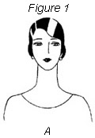 general appearance can be changed by the use of lines in the dress which tend to emphasize certain features or detract from them. Let us look at Fig. 1. Here we have the same head, but showing the influence of different necklines. It is rather hard at first to believe that the neckline really does play such an important part and how different a person can look in the various shaped collars. Fig. A shows the round neckline, which has a decided tendency to broaden the face and emphasize the curves. The face that is oval, but slightly too long and slender, may be enhanced by the round neckline. The very thin face may also be improved, increasing the width. Beware of the round neck if your face is very broad and round, for it only emphasizes the width. Although the round neck looks very well on the thin-faced person, if the neck is very thin and long choose it carefully. However, she may use a scarf or beads and it will improve her looks a great deal.
Fig. B s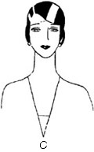hows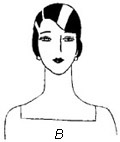 the square neck. It has a tendency to make the lower part of the face look fuller. It is really very flattering to the slender face, particularly for the person who has a narrow chin. However, if the face is too thin it does not look well for it gives severe and angular outlines. So you see, after all, the square neck is best for the person with fairly well proportioned face, who can afford the effect of apparent width.
Fig. C. The V-shaped neckline gives slenderness to the face and neck. It not only slenderizes the face, but helps to make the whole body appear more slender. The width and depth of the V influences its becomingness to different types. A V neck, fitting closely at the sides, makes both the face and neck appear slender. If you desire to further emphasize the V, a pin, a flower or ends, will do this. A bow will start the horizontal movement and take away from the severity of the neckline. So you can see that a person with large face and neck will do well to wear the V-shaped neckline.
Fig. D 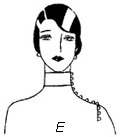shows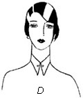 the pointed collar. This again is best worn by the person with a slender face. If a person must wear a high collar and at the same time has a full face, it of course would be better to choose the pointed collar in place of the real high collar as shown in Fig. E. You can see that D has a more slenderizing effect than E, but both are best for the person with fairly slender face, for all high collars have a tendency to make the face seem fuller.
You can easily see from the foregoing examples the effect of line in the dress, upon one's appearance. Certain lines may harmonize well for one type of person, and at the same time be very inharmonious for another type. If you are to look your best, you will have to study your own case and apply these principles when designing your dress.
Harmonious Decorative Design
In order that the decorative design shall harmonize with the structural design any effect at decoration must not appear forced; that is, the decoration should be called for by the structural lines of the dress. Large, gaudy designs show very poor taste and do not harmonize with the whole picture that you are trying to present. as a very safe rule to follow, use a moderate amount of well-chosen and well-placed decoration which is called for by the structural line of the dress and which will bring out the beauty of those lines. By the structural lines, we mean the neckline, waistline, hemline, cuffs, etc. That is the pronounced lines which create or give the impression of shape to the entire dress.
Proportion
Proportion enters into all things of beauty. It was found by the ancient Greeks in their wonderful works of architecture that the whole structure as well as portions of it had to conform to certain rules of shape in order to be pleasing to the eye. This relationship of the dimensions of the object is spoken of as its proportion. The Greeks developed the most beautiful columns which have ever been used and which no architect has ever been able to improve upon. They developed the relationship of width to height which strikes the eye at once in a pleasing way. A variation from these dimensions at once creates the impression that the column is either too slender for its height or too wide.
Just as buildings must be in good proportion, so must the dress you wear. you can acquire the ability to judge whether a dress is in proportion or not by studying the effect produced by different dresses on the same figure. You will find that dresses having horizontal lines created by the use of tucks, ruffles, overskirts, etc., add width to the dress and therefore make the short, stout person appear even shorter and stouter, whereas a dress with vertical lines has the opposite effect.
In this way the proportion of the figure appears to have been altered. The person who is not of the average normal figure must take advantage of such devices to detract from that appearance and enhance her charm.
The Proportion of the Figure
Fig. 2 illustrates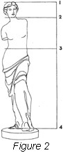 the structural lines and proportions of the human figure.
Correct proportion of figure can be gained by using the head as a unit of measurement. The body, from top of head to feet, is ordinarily 8 heads. From the chin to waist line is ordinarily from 2 1/2 to 3 heads. across the shoulders is 1 1/2 to 1 3/4 heads.
In Fig. 1, notice first the proportions of the body. Point 1 is the top of the head. Point 2 is the chin. From points 2 and is the most important structural part of the garment. Point 3 illustrates the correct structural waistline.
After studying the proportions of the body, the structural points, and experimenting with the heads as a unit of measurement, find the structural points of your own figure and see whether or not your height is eight times the measurement of your head. Perhaps you are only 6 heads high instead of eight. If so, you are shorter than the average person. Perhaps you are ten heads instead of eight. In either case, find the best structural point to remedy the discrepancy in the body measurements. It may require a change in line between points 2 and 3, or a change in line between the points 3 and 4. For instance, a deep V line between points 2 and 3 will give the appearance of length and add to the height of the body. On the other hand, if the figure is ten heads high, many ruffles or circles between points 3 and 4 will detract from the height.
Practice and experiment in this way until you are able to develop lines and styles for whatever type of figure you are most interested in.
Good proportion is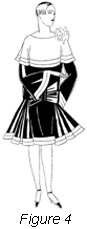 well 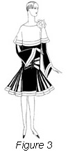illustrated by Fig. 3. The large collar, flare skirt, horizontal stripes, and huge bow, give the appearance of width to the figure, so when worn by the tall, slender person, the proportions are good. Fig. 4 shows the same type of dress on a short, stout figure. The proportions are not so good, for the figure is made to look even shorter and wider than she really is.
Decoration Must Be in Proportion
If your figure is large, avoid the use of very tiny and minute decorations, for they will look out of proportion to the dress as a whole; on the other hand, avoid the extreme the other way, lest it call attention to your stoutness. Likewise if you are quite small, a very large figured material or a large hat would be out of proportion to your general build and the entire picture would not be a pleasing one or the one which you desire to make.
We have discussed two of the principal elements of beautiful dress design, namely, harmony and proportion. When you have thoroughly mastered them, you will have made great progress in the art which you are anxious to learn. These fundamental principles combined with those which are to follow are the foundation upon which you are going to build your future success in dress design.
Balance
Balance in all art, of which dress designing is a part, means the grouping about the center line of shapes and colors, so that there shall be just as much to attract the eye on one side as on the other. It does not follow that in all cases exactly the same objects or colors need appear on either side of the center line in order to present the appearance of balance. In case we do have things exactly alike on either side of the center, which may be either horizontal or vertical, we have what we have what we call "formal balance," and when we use dissimilar objects which attract equal attention, it is called "informal balance."
In order to establish formal balance, objects of equal size and shape and colors of equal attracting power must be placed at the same distance from the center of the object that they have the same weight and attract the same attention. On the other hand, to create informal balance, we place the larger shapes near the center and the smaller ones farther away.
Fig. 5 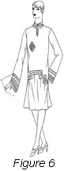is an example of good formal balance. You will notice that both sides of the dress are exactly alike. The plaiting on either side is of the same width and amount, and is placed the same distance from the center line running from the head to the feet, thereby creating a perfect balance. The jacket, too, has the same ornament on either side so it does not disturb the balance. The dress is equally well balanced about the waistline, for the jacket above balances the plaiting below.
example of good formal balance. You will notice that both sides of the dress are exactly alike. The plaiting on either side is of the same width and amount, and is placed the same distance from the center line running from the head to the feet, thereby creating a perfect balance. The jacket, too, has the same ornament on either side so it does not disturb the balance. The dress is equally well balanced about the waistline, for the jacket above balances the plaiting below.
Fig. 6 illustrates an example of formal balance which could be improved upon by moving the monogram to the center of the dress. Located as it is it throws the dress slightly out of balance.
A good example of informal balance may be seen in Fig. 7. Both sides of the dress are different. The large sash placed near the center lines is balanced by the small ornament on the shoulder which is placed as far as possible from the center line.
On the other hand, fig. 8 i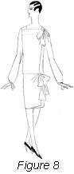s a 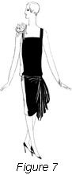poor example of informal balance, because of all the weight being on one side of the dress, thereby making the dress very one-sided. It may be said to be fairly well balanced above and below the center line, as the small bow far removed from the center line balances the large bow close to it, just as the small bow far out on the teeter-totter balances the large bow close to the center. If a dress is to appear balanced it must create in your mind the impression that the distribution of weight, both above and below the center and on either side are equal, so that it is not top heavy or one-sided. You are less likely to make mistakes in formal balance than in informal balance because in the former case each line and decoration is repeated on both sides of the center line. Of course, formal balance should not be used for all dresses, as it tends to be rather too severe for some occasions. It is most fitting for street dresses and sport clothes, whereas informal balance lends itself to the afternoon and evening gown.
When designing a dress in accordance with the principles of informal balance, be sure that you place large decorations or colors which have a strong attractive power close to the center line. If you do not do this the top-heavy or one-sided effect will be produced.
Rhythm
Rhythm in dress is that so-called line movement which causes the eye to travel easily and freely over the costume. Nature realizing that curved lines are lines of rhythm has omitted all sharp angles and straight lines from her works. By following her example we will produce lines in our dress to which there will be a free swing along which the eye may travel without interruption.
You will no doubt say that we do make sue of straight lines in dress such as plaits, panels, etc., which is quite true, but if a rhythmic line is to be produced, be sure that you do not mix these straight lines with curved ones in the same area.
Fig. 9 shows good 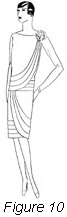rhythm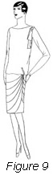 of line, as the eye can trace easily over the curved lines of the skirt which tends to raise the interest toward the upper part of the dress. There is nothing about the lines which conflict, causing the eye to be uncertain whether to go around the dress or up and down. This is not the case in Fig. 10, which shows very poor rhythm of line, for the curved lines of the upper and lower parts of the dress cut across the lines running around the dress.
Emphasis
Emphasis brings the eye first to the center of interest, then to the minor details. In dress design the person wearing the dress should be the center of interest and therefore the dress should be such as to emphasize her personality and attractiveness. The person of a quiet reserved nature would appear out of place and out of harmony in a dress having a great deal of emphasis, whereas the naturally gay, high-spirited, striking personality could wear such a dress very well. Of course, one must never lose sight of the requirements of the occasion upon which the dress is to be worn.
Just as the person wearing the dress should be the center of interest emphasized, so should the head of the person be emphasized more than other parts of the body.
The interest is emphasized by the use of decoration, contrasts of color, by the location of some object and by the use of lines which carry the eye where you wish it to go. For example, the interest is drawn to the face or head by means of the lines of the collar or by some bit of decoration.
Do not get the idea that for a dress to be properly designed, all the interest must be focused near the head, for very pleasing effects are obtained by using a point of emphasis at the waistline or possibly at the bottom of the skirt, carrying out the general scheme by using a bit of the same idea near the face. The principal idea is to create one main center of interest and then let all other parts of the dress be secondary to it, but never lead the interest entirely away from the head.
Fig. 11 shows a very 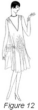satisfactory 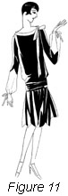example of emphasis. The bow at the neckline emphasizes this part of the dress, thereby the attention is attracted to the head where the center of interest should be.
By contrast, Fig. 12 is a very bad example of emphasis. The large, curved, meaningless design on the dress does not go well with the V-shaped neck. It would be better to do away with this design entirely, or at least substitute one which would not tend to emphasize the center portion of the dress to such an excessive extent, but instead carry a little of the interest to the head.
We have now covered the five fundamental principles of dress design and by which you will be able to make truly artistic and beautiful dresses, coats and other garments. No matter what you are planning to make, consider these principals of art which apply to dress, just as they do to the painting of beautiful pictures or the construction of a magnificent building.
Design Influenced by the Occasion
It is a well-recognized fact that the dress which is suitable for one occasion is entirely inappropriate for another. And just so is the question of the design of the dress influenced by the occasion for which it is to be worn. It is not only to the wearer's individuality that the gown must be suited. When we speak of suitability we mean suitability to the time when the gown is worn, the place where it is worn, the occasion, and the circumstances of the wearer. No matter how charming a gown may be, it is not in good taste if it costs a great deal more than the wearer is known to be able to afford. And no matter how beautiful an afternoon frock may be, it is in poor taste if worn to a formal evening function. The material, color, general form of the dress and the decoration are very much dependent upon whether the dress is to be used for street and business wear, for the golf course, the formal evening party or a simple afternoon frock to be worn in your home. Sometimes it is possible to use the same material for an afternoon party dress and for business wear, simply by the proper choice of design. In the first case, it would be made up more fully and elaborately, whereas in the latter case a more tailored effect should be used.
When in doubt as to the proper design of a dress select the more simple one rather than the elaborate style, and you will be less likely to appear conspicuous.
When designing sport clothing you must always bear in mind the type of sport for which the garment is to be worn. The tennis costume, for example—since the sport is quite vigorous—should be light in weight and color and should not hinder one's movements. The golf costume, however, may be more tailored and of a heavier material. It should be so constructed as to allow a free swing of the arms and should not be too tight so as to interfere with stooping and walking.
As you have learned in an earlier lesson, the house dress to be properly designed should be simple, easily laundered, not too elaborate, and should at all times present a fresh and attractive appearance. Such a garment will actually make your work easier.
Properly design your afternoon dress and it will serve many, many purposes. Unless you are in the habit of dressing formally for the theater, the afternoon dress will be very appropriate likewise for church and the informal evening party in your own home.
Economical Considerations
Inasmuch as Dame Fashion is more or less fickle, changing her mind from season to season as to what shall and shall not be worn, it is wise to use good judgment in dress designing if expense of the wardrobe is to be considered.
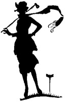It is not the ornamentation of the dress which usually changes, to mark one as being out of style; it is the structural design or the silhouette. By referring to the historical costumes shown in the previous lesson, or even by referring to pictures of your grandmother's day, you will be impressed that it is the general outline or shape of the dress which has changed materially rather than the details of ornament. It is for this reason that it is wise to avoid the extremes of fashion if gowns and frocks are to be in style until they are worn out.
The selections of material and the purpose for which the dress is to be worn has a direct influence on economy. Light, fragile materials which are not very durable may be made up in more extreme fashion than heavier weight fabrics.